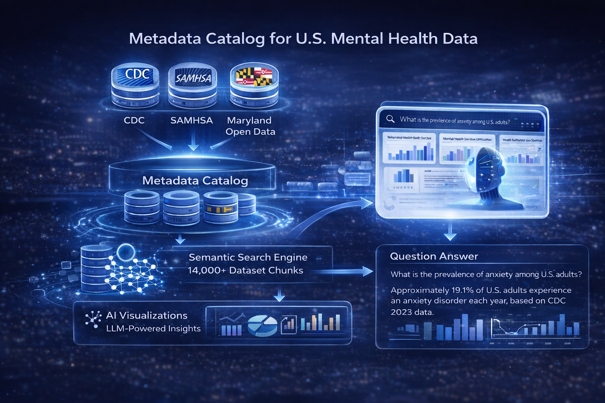
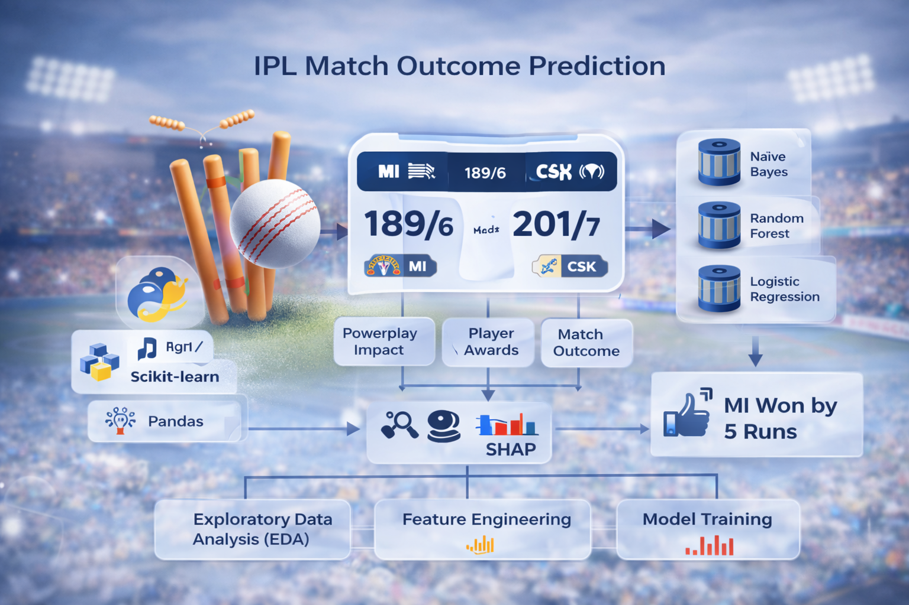

Featured Projects

Metadata Catalog for U.S. Mental Health Data
Production-ready metadata catalog integrating CDC, SAMHSA, and Maryland Open Data with RAG-based question answering and LLM-powered insights. Engineered semantic search for 14,000+ dataset chunks with AI visualizations.

Clinical Question Answering Model using MIMIC-III & LLMs
Intelligent clinical QA system leveraging SBERT for retrieval and ClinicalBERT/T5 for generation. Implemented FAISS indexing and deployed real-time interfaces using Streamlit and Gradio for healthcare professionals.

AI-based Fraud Detection System
Distributed fraud detection architecture on PySpark and Databricks for real-time transaction monitoring. Applied Gradient Boosting and XGBoost with interactive Power BI dashboards to deliver actionable insights.

Abalone Age & Infant Gender Prediction
Developed predictive models using SVM, GBM, Random Forest, and Linear Regression on original and PCA-transformed datasets. Deployed interactive R Shiny application for real-time predictions with dynamic visualization.

IPL Match Outcome Prediction
Built classification models (Naïve Bayes, Random Forest, Logistic Regression) to predict match outcomes, powerplay impact, and player awards. Conducted comprehensive EDA and implemented SHAP for model interpretability.